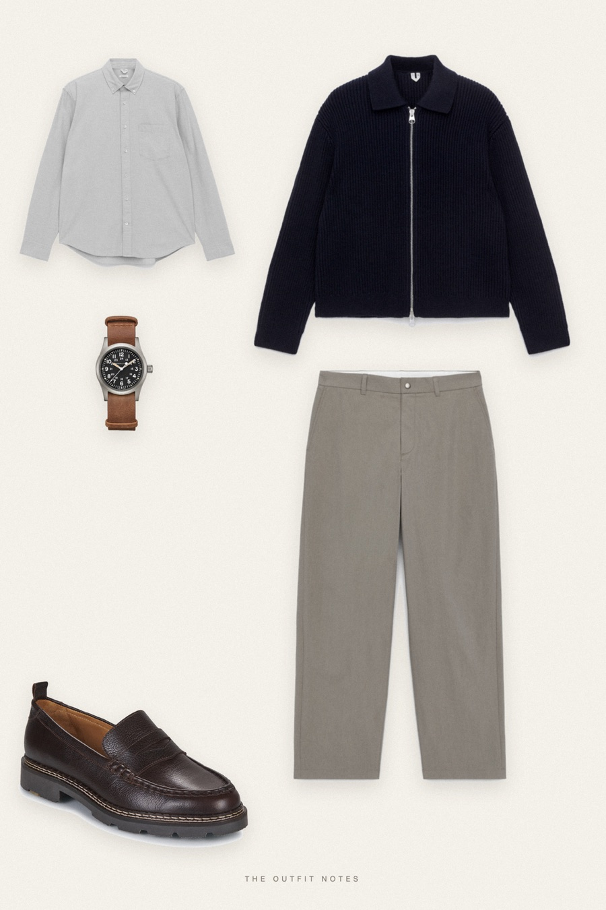
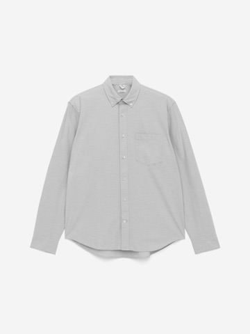

Boardroom Grey
navy knit, pale shirt

Stealth wealth outfit for men: an ARKET navy wool cotton zip cardigan over a light grey Oxford shirt with open collar, light grey relaxed chinos and Pellet Milo loafers. A Hamilton Khaki Field adds the only detail. Quiet luxury men's style in muted tones, inspired by private jet and boardroom dressing.
The pieces
This page contains affiliate links: if you buy through them, we may earn a commission at no extra cost to you. Disclosure.
 ARKET
ARKET
Navy textured zip cardigan
Shop
ARKET
Light grey oxford shirt
Shop ARKET
ARKET
Light-grey relaxed trousers
Shop Pellet
Pellet
Matte brown penny loafers
Shop Hamilton
Hamilton
Khaki field watch
Shop
Prices are indicative, taken when the look was published, and may have changed. Pictures of the outfit are AI-generated illustrations of real products; the product photos are the retailers' own.
Published 1 October 2026.